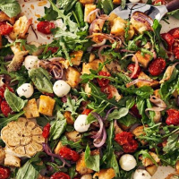

ODIN RECIPES

-
Total time:45 mins
-
Ingredients:
- 8 oz. French bread (about half a loaf) cut into 1" pieces (about 5 c.)
- 12 oz. cherry tomatoes
- 1 small red onion, halved and thinly sliced
- 1 head garlic, halved crosswise
- 1/2 c. extra-virgin olive oil, divided
- Kosher salt
- Freshly ground black pepper
- 1/2 c. grated Parmesan (2 oz.)
- 8 oz. small fresh mozzarella balls (ciliegine or bocconcini)
- 2 c. packed baby arugula
- 1 c. packed fresh basil leaves
- 2 tbsp. red wine vinegar